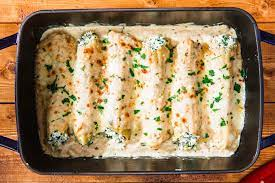
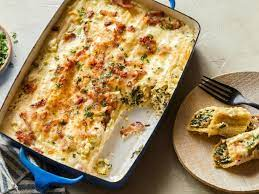

Spinach Chicken Manicotti


Pepper and nutmeg spice up the rich sauce in this hearty pasta dish
Ingredients
- 1 large onion, chopped
- 1 garlic clove, minced
- 1 teaspoon olive oil
- 2-1/2 cups diced cooked chicken breast
- 1 package (10 ounces) frozen chopped spinach, thawed and squeezed dry
- 3/4 cup diced fully cooked lean ham
- 1/4 cup grated Parmesan cheese
- 2 egg whites
- 1/2 teaspoon dried basil
- 1/8 teaspoon pepper
- Dash ground nutmeg
- 12 uncooked manicotti shells
- 3/4 cup all-purpose flour
- 3 cups reduced-sodium chicken broth
- 1 cup fat-free milk
- 1/4 teaspoon salt
- 1/8 teaspoon ground nutmeg
- 1/8 teaspoon pepper
- Dash cayenne pepper
- 1/4 cup grated Parmesan cheese
Procedure
- In a small skillet, saute onion in oil until tender. Add garlic, cook 1 minute longer. In a large bowl, combine the onion mixture, chicken, spinach, ham, cheese, egg whites, basil, pepper and nutmeg; set aside.
4
- Cook manicotti shells according to package directions. Meanwhile, for sauce, combine flour and broth in a large saucepan until smooth; gradually stir in the milk, salt, nutmeg, pepper and cayenne. Bring to a boil over medium heat; cook and stir for 2 minutes or until thickened. Spoon 1 cup into chicken mixture. Add cheese to remaining sauce.
- Spread 1 cup sauce into a 13x9-in. baking dish coated with cooking spray. Drain shells; stuff with chicken mixture. Arrange over sauce. Drizzle with remaining sauce. Cover and bake at 375° for 35-40 minutes or until bubbly and heated through.
Click To Return